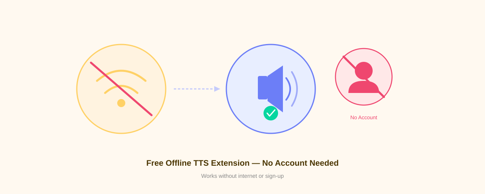

Best Free Text to Speech Chrome Extension With No Account or Subscription

Looking for a text-to-speech Chrome extension that doesn't require an account or monthly subscription? Voice Reader is exactly what you need. Install it, use it instantly, and enjoy natural-sounding speech synthesis without any signup hassle or data tracking.
Why Choose a No-Account TTS Extension?
Most text-to-speech services demand account creation, email verification, and credit card information—even for free trials. Voice Reader eliminates all that friction. With a free way to make Chrome read text aloud, you can start immediately without any barriers to entry.
No account means no data collection, no tracking, and no surprise paywalls. Just install and go.
What Makes Voice Reader the Best Free Option?
Zero Account Requirements
Install the extension and use it immediately. No email. No password. No verification step. That's it.
Completely Free Forever
Voice Reader costs nothing and always will. There's no premium tier, no hidden upgrade, no subscription upsell. The full feature set is available to everyone at no cost.
Works Entirely Offline
Unlike cloud-based solutions, Voice Reader runs entirely in your browser. Your text never leaves your device, and you don't need an internet connection to use it. This is powered by Piper VITS and WebAssembly for offline neural TTS.
Natural-Sounding Neural Voices
Voice Reader uses advanced neural voice synthesis, not robotic speech synthesis. The voices sound natural and human-like, making it pleasant to listen to for extended periods.
Full Privacy Protection
Your reading activity stays private. Voice Reader is a privacy-first TTS extension that sends zero data to the cloud. No analytics, no behavioral tracking, no data brokers.
Word Highlighting for Better Focus
As text is read aloud, each word is highlighted in real-time. This helps you follow along and improves comprehension, especially for people with reading difficulties.
How to Get Started (2 Minutes)
Step 1: Install the Extension
- Open Chrome and search for "Voice Reader" in the Web Store
- Click "Add to Chrome"
- Confirm the permissions (no special permissions needed)
Step 2: Highlight and Listen
- Highlight any text on a webpage
- Click the Voice Reader icon in your toolbar
- Listen as the text is read aloud
Step 3: Customize (Optional)
Adjust voice speed, pitch, and voice selection in the extension settings. But it works perfectly out of the box with zero configuration needed.
Who Should Use Voice Reader?
- Students — Listen to research papers and textbooks while taking notes
- Professionals — Multitask by listening to articles and documents
- Content readers — Enjoy long-form content while commuting, exercising, or cooking
- People with dyslexia — Reading aloud extensions improve comprehension and reduce cognitive load
- Non-native speakers — Hear correct pronunciation while reading
- Privacy-conscious users — Want TTS without surveillance or data collection
Comparison: Voice Reader vs. Paid Alternatives
| Feature | Voice Reader | Speechify | NaturalReader |
|---|---|---|---|
| Cost | Free | $12-20/month | $5-10/month |
| Account Required | No | Yes | Yes |
| Offline | Yes | No | No |
| Data Tracking | None | Extensive | Moderate |
| Neural Voices | Yes | Yes | Yes |
| Word Highlighting | Yes | Yes | Limited |
Install Voice Reader in 30 Seconds
That's all it takes. No account signup. No email confirmation. No credit card. Just click, install, and start listening.
Voice Reader works on Chrome, Edge, Brave, Opera, and any Chromium-based browser.
Frequently Asked Questions
Do I need to pay anything or upgrade later?
No. Voice Reader is completely free, and there's no premium version or hidden costs.
How does offline TTS work?
Voice Reader uses WebAssembly and Piper VITS technology to run neural voices directly in your browser. No server calls, no cloud processing.
Is my data safe?
Yes. Since Voice Reader runs offline, your data never leaves your device. No tracking, no analytics, no third-party servers.
Can I use this on mobile?
Voice Reader is designed for desktop Chrome browsers. Some Chromium browsers on mobile may work, but it's optimized for desktop use.
What if I need help?
Voice Reader is open source. Visit the GitHub repository for documentation and support.